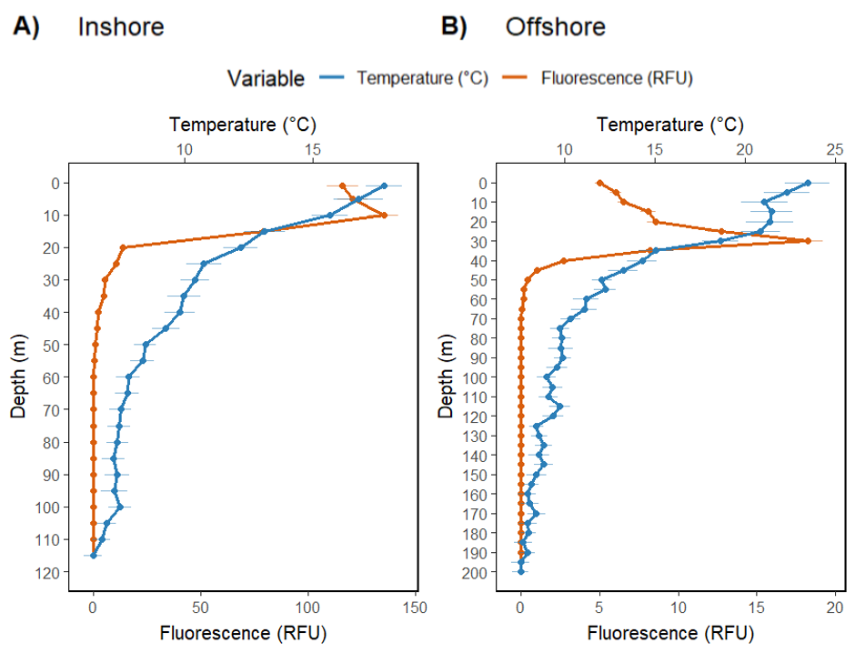
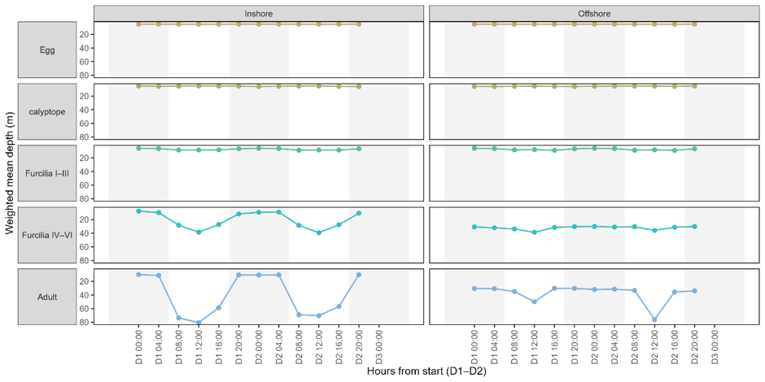
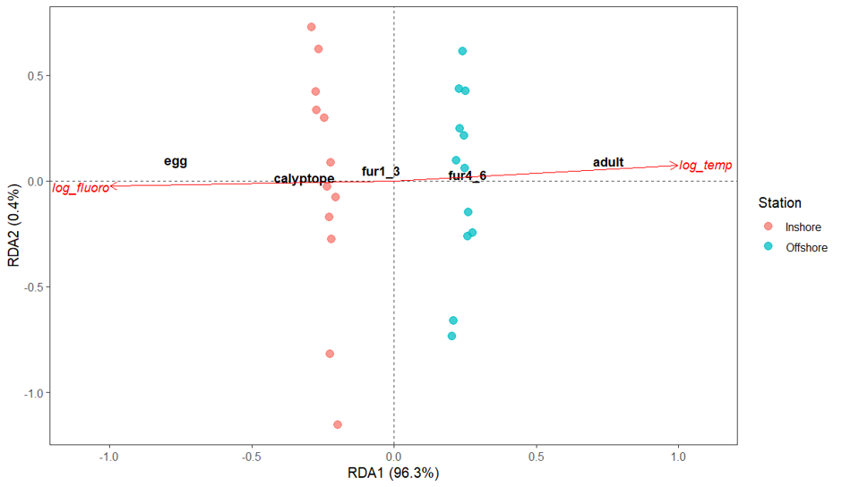

Author: Phemelo Rutlokoane
Department of Biodiversity and Conservation Biology
University of the Western Cape
Abstract
Diel vertical migration (DVM) of Euphausia lucens (Euphausiid) was studied at two St Helena Bay stations (inshore, offshore) in South Africa over 48 hours on October 2024 using a Multiple Opening and Closing Net equipped with an Environmental Sensing System (MOCNESS) every 4 hours. Euphausiids were counted and categorised into eggs, calyptopes, furcilia I-II, furcilia IV-VI and adults life-history stages. Their vertical position was summarised by weighted mean depth, and day-night distributions were compared with Kolmogorov–Smirnov tests. Redundancy analysis and PERMANOVA related the life-stage structures to temperature and fluorescence. Adults and furcilia IV-VI showed patterns of DVM both inshore and offshore but were weaker and shallower offshore. Eggs, calyptopes and furcilia I-III remained near the surface at both stations. Temperature and fluorescence accounted for most variance but showed shared effects, suggesting co-stratification of cool, food-rich layers. These findings indicate that as E. lucens grows through its life stages, their vertical migration changes, and these movements change between the shallow inshore site and deeper offshore site. Their migration acts as a moving link in the food chain that connects microscopic plants to predators.
Keywords: chlorophyll fluorescence proxy, food availability, ontogenetic vertical migration, Southern Benguela ecosystem, upwelling
Introduction
The Benguela Current is located off the coast of Southern Africa and is one of the world’s major eastern boundary upwelling systems, renowned for its high productivity (Hutchings et al. 2009; Martin et al. 2024). South-easterly winds predominate the region from September to March, bringing in cold, nutrient-rich waters from deeper layers to the surface (Andrews and Hutchings 1980; Martin et al. 2024). Nutrients reaching the surface due to upwelling are expected to be rapidly re-exported so that high trophic level organisms cannot effectively use the available production (Martin et al. 2024).
Diel vertical migration (DVM) of zooplankton is a universal phenomenon that occurs in sea, fresh-and brackish water (Andersen and Nival 1991). Ascension in the evening and descension in the morning are considered the ‘normal’ patterns of this phenomenon, however, ‘reversed’ migration cases have also been put up forth (Lampert 1989). According to Andersen and Nival (1991), numerous laboratory and field studies revealed factors that initiate DVM, an example was the review of Forward (1988), expressing the factors to be exogenous (e.g. light, gravity, oxygen) and/or endogenous (e.g. sex, age, biological rhythms). Although light is generally agreed to be the most significant factor, the importance of exogenous or endogenous factors varies among species (Andersen and Nival 1991).
Diel migration is common in most euphausiid species, whereby greater depths are occupied mostly by older stages during the day, while during the night populations cluster in shallower depths (Pillar 1987). Most oceanic species have developmental ascent, a characteristic whereby eggs sink and hatch into nauplii at depth and ascend to upper layers as first-feeding calyptopis larvae at the beginning of ontogenetic migration (Pillar 1987). By contrast, in neritic species such as E. lucens and shelf-dwelling species, the eggs and nauplii have been shown to be restricted in upper layers while larvae and older life stages migrate across different depth ranges throughout the water column (Pillar 1987). Because the coastal environment of St Helena Bay region denotes stronger horizontal and vertical circulation systems, and more complex advective processes than the oceanic environment, neritic species interact with varying current regimes to maintain themselves within the coastal environment (Pillar et al. 1989). Currents acting on early reproductive stages may turn out to be different from those acting on older larvae stages and adult stages due to ontogenetic shifts in the patterns of migration (Pillar 1987).
Euphausiid species in the southern Benguela (e.g. E. lucens, E. hanseni) are known to migrate under food-rich conditions (Gibbons 1993). For example, Gibbons (1993) found that E. lucens at an inshore St Helena Bay station with high chlorophyll, dispersed after surfacing during the night, then descended at dawn. During the same period at an offshore shelf site, majority of the population remained at depth (Gibbons 1993). These observations support the “hunger-satiation” hypothesis of DVM in euphausiids.
The aim of this study was to test how DVM of E. lucens differs by developmental stages at an inshore and offshore station in St Helena Bay. I will test whether eggs, calyptopes, early furcilia, late furcilia, and adults’ migration patterns differ in the times they occur and the magnitude of day–night depth shifts, and assess how temperature and fluorescence covary with these patterns. The hypothesis is that adults and late furcilia stages will ascend at nighttime and descend at daytime, with stronger migration inshore than offshore, while the eggs, calyptopes, and early furcilia remain near the surface with little diel migration patterns.
Methodology
Study area
The study was conducted at two anchor stations situated in the northern part of St Helena Bay, South Africa during October 2024. The sounding at the inner station (31˚41’S, 18˚03’E) was $≈125 m$, whilst it was $≈290 m$ at the outer station (31˚39’S, 17˚02’E).
St Helena Bay is a semi-enclosed embayment on the west coast of South Africa, in the southern Benguela ecosystem. Southeasterly winds during spring and early summer result in the offshore advection of surface waters in this area, which are replaced by cooler waters (South Atlantic Central Water) that upwell onto the shelf (Shannon 1985). These upwelled waters are rich in nutrients that fuel productive food chains based largely on diatoms (Shannon and Chapman 1985, Shannon and Pillar 1986), though calm winds at the end of summer can lead to the development of intense red-tides dominated by dinoflagellates inshore, and localised hypoxia (Pitcher et al. 2014).
Field sampling
Zooplankton samples were collected every four hours over a 48-hour period at each of the two anchor stations using a Multiple Opening and Closing Net equipped with an Environmental Sensing System (MOCNESS). The frame supported six nets having a mouth area of $1 m^2$, and all nets were fitted with $180 µm$ mesh. The net was lowered to a depth of $200 m$ (or $10 m$ above the seabed in shallower water), whereafter it was retrieved at a rate of $~1 ms^-1$, whilst the ship was moving at a speed of ~2.5 knots: the net was maintained at an angle of ~45˚ to the vertical throughout retrieval. The nets were triggered at depths of ($200 m$ -) $100 m$, ($100 m$ -) $50 m$, ($50 m$ -) $30 m$, ($30 m$ -) $20 m$, ($20 m$ -) $10 m$ and ($10 m$ -) the surface. The mouth of each net was fitted with an electronic flowmeter, by which the volume filtered by the net could be calculated. Once on deck, the nets were washed down with ambient seawater, their contents were concentrated and then the sample was preserved in 7% buffered saline formalin.
Information about the vertical structure of the water column was determined immediately after each zooplankton tow using a Continuous Temperature and Depth recorder (CTD: Seabird 911plus) fitted with a fluorometer (Turner Designs). Although environmental data were recorded on a continuous basis from the surface to a depth of $200 m$ (or $10 m$ above the seabed in shallower water), temperature and fluorescence data are reported here only at $5 m$ intervals. Salinity data are not shown as the water column at both anchor stations were effectively isohaline throughout, varying from $~35.1 psu$ at the surface to $~34.7 psu$ at the seabed.
Laboratory processing
Prior to examination, zooplankton samples were drained through a sieve of $150 µm$ mesh, rinsed with clean seawater and resuspended in freshwater. Thereafter, samples were split using a Folsom Plankton Splitter (McEwen et al. 1954) and all euphausiids and their developmental stages were counted under a microscope from an appropriate number of subsamples. Although the number of subsamples examined was dependent on the size of the sample, a minimum of 400 specimens of each life history stage was counted (Harris et al. 2000). Euphausiids were categorized into five life-history stages: eggs, calyptopes, furcilia I-III, furcilia IV-VI and adults.
Data processing
Raw counts and environmental data were processed in R (version 4.5; R Core Team 2023) using base stats and tidyverse packages. Zooplankton life stage raw counts were converted to volumetric densities (individuals $m^-3$) by dividing by the volume filtered. A depth midpoint was calculated using the biological data’s depth ranges (max depth + min depth / 2), and weighted mean depth (WMD) was calculated for each life stage and cast (station x day x time) as:
$$WMDℓ = \frac{∑nℓizi}{∑nℓi},$$
where $nℓi$ is the density of the life stage and zi the depth midpoint of the sampling unit (Wang et al. 2025). When no individuals of a life stage were present in a cast (∑nℓi = 0), WMD was set to N/A and excluded from plotting. This parameter was used to quantify the average depth at which majority of zooplankton resided during the day and at night (Battes and Momeu 2014; Wang et al. 2025).
Statistical analysis
To determine the presence of DVM behaviour, normality was tested using the Shapiro-Wilk test and homogeneity of variances using Levene’s test. The significance level was set as 0.05. Day (06:00 – 18:00) and night (18:00 – 06:00) profiles of each life stage were compared using a two-sample Kolmogorov-Smirnov (KS) non-parametric test. Such non-parametric tests have been used to detect vertical distribution shifts in plankton in previous studies (Battes and Momeu 2014; Hu et al. 2014). The determination of DVM behaviour was based on the occurrence of significant differences between day and night vertical distributions. The environmental data (temperature and fluorescence) were log-transformed ($log(X + 1)$) in preparation for ordination.
Ordination and Permutation-based multivariate test
The life stage densities were Hellinger transformed (square root of relative abundances) before being used for constrained ordination. The Hellinger transformation preserved Euclidean distances among samples and removed the influence of double zeros (Borcard et al. 2011). Detrended correspondence analysis (DCA) was applied to determine the heterogeneity using the “vegan” package (Borcard et al. 2011; Oksanen et al. 2013). The length of the first DCA was 3.6, which meant it was suitable for a Redundancy analysis (RDA). Redundancy analysis (RDA) was performed on the Hellinger matrix with log temperature and log fluorescence to assess the influence of temperature and fluorescence on the life stages. Significance of terms was assessed by permutation tests (anova.cca) with 999 permutations. Furthermore, a distance based permutation MANOVA (PERMANOVA) was performed on the Hellinger Euclidean distance matrix to test each environmental predictor sequentially and marginally. All statistical analyses and ordinations were conducted with R (version 4.5).
Results
Environmental variables
When comparing the surface temperature at the inshore station to that at the offshore station, a difference can be observed (Figure 1). The surface temperature at the inshore station was cooler (maximum of $≈ 13 - 18°C$) than that at the offshore station (maximum of $≈ 21 - 24°C$). The offshore station also showed a greater thermocline than inshore station as seen by the sharp increase in temperature from 10°C ($40 m$) to 24°C ($≈ 30 m$). The subsurface fluorescence maximum between both stations were also different (Figure 1), with the inshore station reaching a maximum of $≈ 137 RFU$ at $10 m$ and the offshore station reaching a maximum of $≈ 18 RFU$ at $30 m$.

Vertical distribution of life stages
Weighted Mean Depth data for each life stage and station are displayed across two days (Figure 2). Eggs and calyptopes remained close to the surface at both stations, with their WMDs being stationary at $≈ 20 m$ and no movement during the day and night. Furcilia I-III were also restricted to the upper $≈ 20 m$, with slight vertical movement but no consistent diel pattern. Inshore furcilia IV-VI showed a clear diel cycle, where the mean depth was $≈ 20 m$ at night and deepened to $≈ 30-40 m$ during the day on both days, then moved up again after sunset. Offshore furcilia IV-VI showed a similar but weaker pattern, with their depth changing from $≈ 36-40 m$. Adult E. lucens had the most pronounced migration. Inshore adults descended from $≈ 17 m$ at night to $≈ 78-80 m$ during the day, then ascended after sunset on both days; the migration amplitude was $≈ 61-63 m$. Offshore adults also moved deeper during the day ($≈ 40-50 m$) and shallower at night ($≈ 30 m$) in day 1, though the range was smaller. The range was larger in day 2 when adults moved deeper to $~78 m$ at 12:00 and shallower to $~30 m$ at night. Kolmogorov-Smirnov tests confirmed these patterns, where adults ($D ≈ 0.78$, p < 0.05) and furcilia IV–VI ($D ≈ 0.76$, p < 0.05) showed very large distances between day and night depth distributions, whereas furcilia I–III ($D ≈ 0.21$, p < 0.05) and calyptopes $D ≈ 0.03$, p < 0.05) had much smaller effect sizes. Eggs showed no difference ($D ≈ 6.4×10^-16$, p = 1). Therefore, diel shifts were limited to the later stages.

Redundancy Analysis (RDA)
The first RDA axis explained 96.3% of the variance and aligned entirely with temperature (Figure 3). The second axis explained 0.4% of the variance and aligned almost entirely with fluorescence. Adult and furcilia IV-VI scores lay in the positive direction of the RDA1, showing an association with higher temperatures, while eggs and calyptopes lay towards the cooler, high fluorescence rich waters. The station scores are separated along RDA1, whereby offshore casts are clustered at the warm side (right) and inshore casts are clustered at the cool, high fluorescence side (left). The permutation tests showed that log-temperature was highly significant (p < 0.001), and log-fluorescence was significant (p < 0.05).

Distance based Permutational Multivariate Analysis of Variance (PERMANOVA)
Permutational Multivariate Analysis of Variance on the Hellinger-transformed Euclidean distance matrix returned the same hierarchy of drivers. When the environmental variables were entered sequentially, with temperature being entered first, log-temperature accounted for 95.7% of the variance (Sum of squares = 1.82) and was highly significant (p < 0.001), whereas log-fluorescence accounted for 0.9%, but remained significant when fitted second (p < 0.05). Marginal tests, however, showed that the unique contribution of temperature was small (Sum of squares ≈ 0.009, R² ≈ 0.0047, pseudo F ≈ 2.97, p > 0.05) and that the log-fluorescence made a larger contribution (Sum of squares ≈ 0.0176, R² ≈ 0.0093, pseudo F ≈ 5.87, p < 0.05).
Discussion
The dataset shows ontogenetic differences in vertical behaviour that follow general zooplankton DVM (Gibbons et al. 1991; Gibbons 1993; Hu et al. 2014; Battes and Momeu 2014; Im and Suh 2016). Furcilia IV-VI and adults showed DVM, descending into deeper, cooler waters during the day and ascending at night. The KS statistics for adults and furcilia IV-VI ($D ≈ 0.76–0.78$) shows biologically meaningful separation of day and night distributions. Moreover, eggs and calyptopes showed no vertical movement, supporting the idea that DVM develops only once individuals acquire the swimming capacity to leave the mixed layer (Bandara et al. 2021). The small pattern in furcilia I-III ($D ≈ 0.21$) indicates some capacity for vertical movement, even though it is limited possibly by their morphological development.
Studies from the southern Benguela upwelling region support this ontogenetic movement. Euphausia lucens adults have been shown to migrate daily from surface waters to depths of over $100 m$ (Gibbons et al. 1991). Observations by Gibbons (1993) indicate that adult E. lucens descend at sunrise and ascend at sunset, with feeding rates being high during the night. These patterns match the KS and WMD results, enforcing the conclusion that only later stages of E. lucens participate in DVM.
The constrained ordination and sequential PERMANOVA identified temperature as the dominant predictor of life stage composition, while fluorescence has accounted for a smaller percentage of variance. On the other hand, the marginal PERMANOVA showed that once the shared variation between temperature and fluorescence was removed, the unique contributions of fluorescence became significant (p < 0.05), and temperature was not (*p* > 0.05). Temperature gradients across inshore and offshore stations, which are driven by coastal upwelling, likely limit the depth range at which krill can migrate by influencing their metabolism and oxygen demand (Chapman and Shannon 1985; Hutchings et al. 2009). Fluorescence (a proxy for phytoplankton biomass) reflects food availability. Early life stages remained near the high fluorescence zones, whereas the adults left that zone during the day. Sequential PERMANOVA suggests that much of fluorescence’s effect is shared with temperature, probably because the high fluorescence coincides with cooler waters. The marginal test therefore cautions agains over-interpreting temperature as the only driver.
Additional factors that have not been measured here may influence DVM. Upwelling systems such as the Benguela are characterised by hypoxic deeper waters (Hutchings et al. 2009), which can limit the downward migration of zooplankton (Pillar et al. 1989) and restrict hake predation to the near-surface layers (Payne et al. 1987). Models of krill DVM have shown that the trade-offs between growth and predation risk can explain migration patterns (Andersen & Nival 1991). Field observations confirm that euphausiids adjust their migration amplitude in response to hypoxia and prey availability (Pearre 2003; Tremblay et al. 2020). These considerations can suggest that while temperature and fluorescence capture much of the variance in life-stage distributions, predator cues, oxygen levels, and hunger are also triggers of DVM.
This study’s findings align with broader literature on Benguela ecosystems. The system’s high productivity, driven by wind-driven upwelling (Hutchings et al. 2009; Martin et al. 2024), support large populations of euphausiids that form a link between phytoplankton and fish (Shannon 1985; Hutchings 1992). Habitat partitioning among euphausiids (Barange 1990) and predator-prey interactions (Payne et al. 1987) suggest that DVM regulates energy flow. The sequential and marginal PERMANOVA results showed how shared variance among environmental variables can complicate judgement and assumptions, highlighting the importance of using multiple metrics and cautioning against linking causation to just one variable.
In conclusion, the adult and furcilia IV-VI life stages of E. Lucens perform significant DVM in St Helena Bay, probably to balance their feeding opportunities against predator risk. Temperature and fluorescence together explain most of the spatial and temporal variation in life stage composition, but other factors that were not measured likely play a role in their migration behaviour. In future, having more variables such as light, oxygen, predator abundance, and feeding data would be helpful in determining the drivers of DVM in this upwelling system.
Acknowledgements
I would like to convey my gratitude to Professor MJ Gibbons for his guidance in explaining the study, as well as his contribution to majority of the methodology section and literature used to complete this project. His input helped shape the structure and direction of this entire project.
References
Andersen V, Nival P. 1991. A model of the diel vertical migration of zooplankton based on euphausiids. Journal of Marine Research 49: 1–17. Andrews WRH, Hutchings L. 1980. Upwelling in the Southern Benguela Current. Progress in Oceanography 9: 1–81.
Bandara K, Varpe Ø, Wijewardene L, Tverberg V, Eiane K. 2021. Two hundred years of zooplankton vertical migration research. Biological Reviews 96: 1547–1589.
Barange M. 1990. Vertical migration and habitat partitioning of six euphausiid species in the northern Benguela upwelling system. Journal of Plankton Research 12: 1223–1237.
Battes KP, Momeu L. 2014. Diel vertical distribution of planktonic microcrustaceans (Crustacea: Cladocera, Copepoda) in a natural shallow lake from Transylvania, Romania. Journal of Limnology 73: 236–246.
Borcard D, Gillet F, Legendre P. 2011. Numerical ecology with R. New York: Springer. Chapman P, Shannon LV. 1985. The Benguela ecosystem Part II. Chemistry and related processes. Oceanography and Marine Biology an Annual Review 23: 183–251.
Forward RB Jr. 1988. Diel vertical migration: zooplankton photobiology and behaviour. Oceanography and Marine Biology: An Annual Review 26: 361–393.
Gibbons MJ. 1993. Diel vertical migration and feeding of Euphausia lucens at two 72 h stations in the southern Benguela upwelling region. Marine Biology 116: 257–268.
Gibbons MJ, Barange M, Pillar SC. 1991. Vertical migration and feeding of Euphausia lucens (Euphausiacea) in the southern Benguela. Journal of Plankton Research 13: 473–486.
Harris R, Wiebe P, Lenz J, Skjoldal HR, Huntley M. (2000) ICES Zooplankton Methodology Manual. Academic Press, San Diego
Hu C, Wang S, Guo L, Xie P. 2014. Effects of the proximal factors on the diel vertical migration of zooplankton in a plateau meso eutrophic Lake Erhai, China. Journal of Limnology 73: 375–386.
Hutchings L. 1992. Fish harvesting in a variable, productive environment — searching for rules or searching for exceptions? South African Journal of Marine Science 12: 297–318.
Hutchings L, van der Lingen CD, Shannon LJ, Crawford RJM, Verheye HMS, Bartholomae CH, Van der Plas AK, Louw D, Kreiner A, Ostrowski M, Fidel Q. 2009. The Benguela Current: an ecosystem of four components. Progress in Oceanography 83: 15–32.
Im YH, Suh H. 2016. Ontogenetic feeding migration of the euphausiid Euphausia pacifica in the East Sea (Japan Sea) in autumn: a stable isotope approach. Journal of Plankton Research 38: 904–915.
Lampert W. 1989. The adaptive significance of diel vertical migration of zooplankton. Functional Ecology 3: 21–27.
Martin B, Auel H, Bode Dalby M, Dudeck T, Duncan S, Ekau W, Fock HO, Hagen W, Heinatz K, Kaufmann MJ, Koppelmann R. 2024. Studies of the ecology of the Benguela current upwelling system: the TRAFFIC approach. In: Sustainability of Southern African Ecosystems under Global Change: Science for Management and Policy Interventions. Cham: Springer International Publishing.
McEwen GF, Johnson MW, Folsom TR. 1954. A statistical analysis of the performance of the Folsom plankton splitter based on test observations. Archiv für Meteorologie, Geophysik, und Bioklimatologie, Series A 7: 502-527.
Oksanen J, Blanchet FG, Kindt R, Legendre P, Minchin PR, O’Hara RB, Simpson GL, Solymos P, Stevens MHH, Wagner H, Oksanen MJ. 2013. Package ‘vegan’. Community Ecology Package version 2.9: 1–295.
Payne AI, Rose B, Leslie RW. 1987. Feeding of hake and a first attempt at determining their trophic role in the South African west coast marine environment. South African Journal of Marine Science 5: 471–501.
Pearre S Jr. 2003. Eat and run? The hunger–satiation hypothesis in vertical migration: history, evidence and consequences. Biological Reviews 78: 1–79.
Pillar SC. 1987. Distribution and population dynamics of Euphausia lucens (Euphausiacea) in the southern Benguela current. PhD thesis, University of Cape Town, South Africa.
Pillar SC, Armstrong DA, Hutchings L. 1989. Vertical migration, dispersal and transport of Euphausia lucens in the southern Benguela Current. Marine Ecology Progress Series 53: 179–190.
Pitcher GC, Probyn TA, du Randt A, Lucas AJ, Bernard S, Evers-King H, Lamont T, Hutchings L. 2014. Dynamics of oxygen depletion in the nearshore of a coastal embayment of the southern Benguela upwelling system. Journal of Geophysical Research: Oceans. 119, 2183–2200.
R Core Team. 2023. R: A language and environment for statistical computing. Vienna: R Foundation for Statistical Computing. Available at: https://www.R-project.org/ (accessed 08 June 2025).
Shannon LV. 1985. The Benguela ecosystem Part I. Evolution of the Benguela, physical features and processes. Oceanography and Marine Biology an Annual Review 23: 105–182.
Shannon LV, Pillar SC. 1986. The Benguela ecosystem Part III. Plankton. Oceanography and Marine Biology an Annual Review 24: 65-170.
Tremblay N, Hünerlage K, Werner T. 2020. Hypoxia tolerance of 10 euphausiid species in relation to vertical temperature and oxygen gradients. Frontiers in Physiology 11: 248.
Wang S, Zhang F, Li Q, Zang W, Chi X, Tao Z, Sun S. 2025. Zooplankton diel vertical migration and its mediated active carbon flux in the South China Sea under the influence of mesoscale eddies. Journal of Plankton Research 47